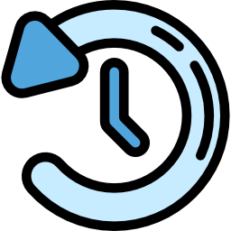

Links documents that are related to each other by using hypertext
The motiviation for the creation of the WWW is for the use of researchers and scientist
In the past, WWW was only textual
Sir Tim Berners-Lee and The World Wide Web Constortium are overseeing the evolution of the web(which is the semantics or the meaning).
Semantic Search: asking questions on the search engine would now be meaningful or it would tell you something.